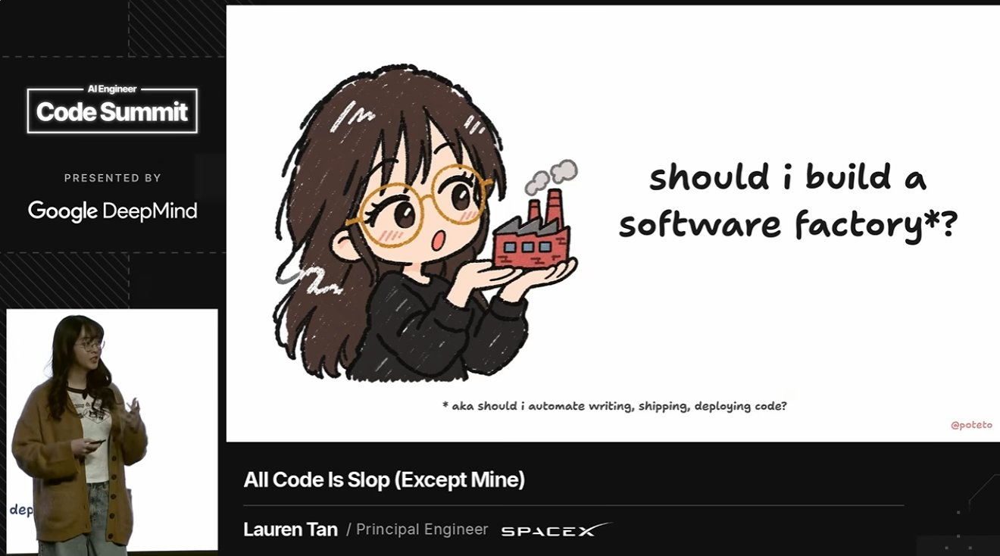
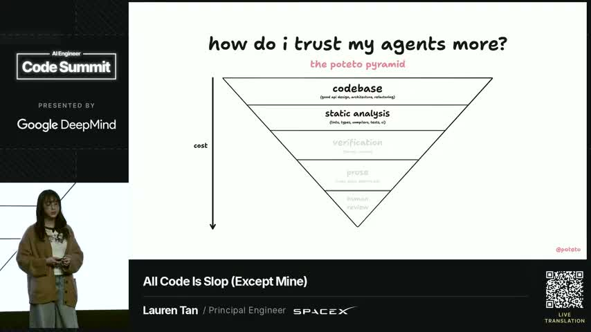

全文讲解约 18 分钟
反复出现的错，要进代码库、API 或能执行的检查
Lauren Tan，2026-11-11，AI Engineer CODE 2026 主会场。中文 15 段来自王长川，2026-11-17。
- 纠正落到代码库、API 或能执行的检查
- 代码库是最大的输入，坏例子会被抄走
- 每次纠正都应收成检查，或从设计上消掉这一类
- 70% 是 Cindy 的数字，Lauren 说的是 most
- 内循环还在产出 slop，就不要先自动化
王长川的 15 段是归纳
出处：王长川长帖 · 王长川长帖
「大家信不信？」是王长川的开场，不是 Lauren 的句子。
他称讲者土豆姐，并说去北上广深找工作。
月入低于 3万 时「我给你补」，是他自己的口头约定，不是演讲里的薪酬数据。
标题先写 All Code Is Slop，括号里再写 Except Mine。他把它收成 10 条顶级干货。10 是他的分法。
大家信不信？
王长川长帖出处：王长川长帖 · 长帖开场
第 1 条说，重要的不是写得越来越快，而是一直写出好代码；写错了也能自己发现、自己改过来。
「自己改过来」是他的压缩。演讲说的是在大幅提高产量的同时保住甚至提高质量。对照官方逐字稿 01:02:32。
第 2 条把代码库说成给 AI 的知识库。原帖用字是直接影决定，本页不改正文。
演讲对应的判断是输入质量很要紧，代码库是最大的输入之一。对照官方逐字稿 01:04:23。
第 3 条反对只靠提示词。能直接写进代码的，就写成工具会执行的约束。也就是变成硬性规则的那一类。
例子分开写：比如类型检查。还有 Lint 规则。还有自动化测试。这和倒金字塔底部同向。
第 4 条先点名 AGENTS.md。再点名 CLAUDE.md。规则写得再多，agent 也可能忽略。后半句是理解过头。
演讲里需要判断的散文，机器转写写成 rules、skills、agents.mmd。整理文写的是 AGENTS.md。
「理解过头」接近后文那句：agent 会把一次小纠正当成永远不能打破的硬规则。那不是同一句。对照官方逐字稿 01:08:37。
第 5 条不让 agent 只交 diff。要自己启动项目。要运行程序。看日志写在这条里。调试bug 也写在这条里。最好再像人一样把功能走一遍。
看日志是长帖补出的细节。演讲说的是自己运行代码、使用人也会用的调试工具，以及像真实用户那样操作。对照官方逐字稿 01:11:04。
第 6 条要做一张产品功能地图。先写产品有哪些页面。再写每个页面有什么功能。还要写用户怎么操作。
这样测试时有依据。演讲里的 feature map 就是从用户视角列出功能，避免 agent 去猜「左边那个」。
第 7 条说写代码只是第一步，能不能验证才更重要。
原句里土豆姐提到一位有工程师。每天 70% 的 Token 花在验证上。这位有工程师可以对上被转述的 Cindy。70% 不是 Lauren 为自己报的精确比例。对照官方逐字稿 01:13:15。
第 8 条劝人先别上多 agent，也别先做完全部自动化。要先让一个 Agent 自己的循环变顺。
他用垃圾形容代码，也用水来形容。几十个一起，他写成一坨屎。演讲的原句是内循环若产出 slop，自动化只会更多。逐字稿没有 one agent 这句。基础做好之后，她才讲编排很多 agent。对照官方逐字稿 01:16:35。
第 9 条说，发现错了不要只改这一次。要从代码结构、规则或测试上解决，让下次没机会再犯。
这和演讲原则同向：每次纠正都变成确定性检查，或用更好的 API 和结构设计把这一类问题消掉。
第 10 条的三个对照要拆开看。不是最会写代码。也不是最会写提示词的。而是最懂搭环境、定规矩，并且做验证的人。
最会写提示词是他的对照用语。演讲强调的是环境、可执行约束和验证。对照官方逐字稿 01:02:32。
视频源地址是缩短链接，落到切出视频 O_zcc6Xl12g。
官方逐字稿的时钟绑在直播 ZZ19zhYnDKY 这一路上。本页引用口述时用直播绝对时间，不用这条切出视频的播放器时间。
这张配图宽 1320，高 734。接口没有给出 alt_text。
画面是现场照片。幻灯上的问句是要不要做 software factory。它不是官方页那张倒金字塔。
没有观看视频，所以不能标出这张幻灯在直播或切出视频里的秒数。

出处：王长川长帖 · 王长川长帖
月入低于 3万、去北上广深「我给你补」，是王长川的话。不能写成演讲里的薪酬数据。
第 1 条把论题改成否定速度。演讲没有这句否定。第 2 条的「直接影决定」按原帖保留。
纠正要落到代码库、API 或能执行的检查
出处：官方演讲页 · 官方演讲页
整理文的题眼是：同一个错再出现时，人容易再往 AGENTS.md 加一条警告。
Lauren Tan 想把纠正放到更难忽略的地方：代码库、API，或一条能执行的检查。
演讲者是 Lauren Tan。公司写的是 SpaceXSI。职务先写 Principal，后面才是 Engineer。中文长帖作者是王长川。
演讲日期是 2026 年 11 月 11 日。来源标签 sourceLabel 写成 Day 1。长帖是 2026 年 11 月 17 日。钟点的小数是 38.000。同一时刻也写成下午 03 点、45 分、38 秒。
空行拆开以后一共 15 段。构成是 3 段开场，加上 1 段标题，加上 10 条干货，加上 1 段视频源地址。
talk.start 写成 3662.4 秒。talk.end 写成 4718 秒。videoId 是 ZZ19zhYnDKY 这一路直播。
字段 transcriptNotice 说明两件事：转录由机器生成，错字保留；时钟用的是源录像，不是切出视频自己的零点。
markdown 那份是 44840 字节，共 441 条。srt 那份是 31267 字节，也是 441 条。同一份文件的两条下载路径字节相同。
整理文分成 6 节。公开图宽 854、高 480。讲义里没有 PDF。也没有 PPT。没有另外的幻灯原图。
44840markdown 转录的字节数
其余幻灯和全部视频画面没有采集到。这里不猜、不画。文件名 3835 和各节起点秒数都不是已观看的出镜核对。
简报和海报只有摘要。这一页是主版本。11 月 16 日简报 · 11 月 17 日海报
产量变大时，要保住甚至提高质量
出处：开场口述 · 开场口述
开场这一节从 3662.4秒 起算。计时方式是整场起点的回退，不是单独核对过的出镜时刻。
整理文先重复题眼，再说她用几个月把环境做起来，才送出成千上万份合并请求。产量是醒目的结果。题目其实是信任：生成的代码变多，事后要人抓的缺陷不要跟着变多。
口述一上来她说自己叫 Potato，也叫 Lauren，在 SpaceXsi 做 Grabbot。机器转写先写成 slap，同一段后面写成 slop，并说可以把 slop 变成 gold。slap 按原样留着，不改成 slop。
turn that slop into gold
Lauren Tan 口述出处：Lauren Tan 口述 · 开场
她说上个月送出了 3,000 ploy crust。ploy crust 是机器转写，本页不把它改成合并请求。
有 agent 之前，除了特别能写的人，团队不太追体积。她举的例子是 Brett Taylor，说他周末重写了 Google Maps。这是演讲原话，本页没有另核这段经历。
有了 agent，谁都可以变成那种 coding machine。她的论题是：软件工程师的工作，是在大幅提高产量的同时保住甚至提高质量。
有人把这叫做 software factory。她自己愿意把它收成信任。不是盲信，而是把 agent 的环境做好，才相信它们会做对的事。
3,000口述里的 ploy crust，不改字
slap 不改成 slop。ploy crust 不改成合并请求。Brett Taylor 周末重写 Google Maps 只记她的原话，本页没有另核。
最硬的约束放在代码和静态检查里
出处：倒金字塔 · 倒金字塔
这一节从 3789秒 起算，依据是原片上的时间链接。图文件名里的 3835 只说明官方文件名，本页没有用播放器核对出镜秒。
她用倒金字塔安排时间。底下两层是确定性的：代码本身，例如 API 设计、架构、重构；以及 lint、类型系统、编译器和测试。两层一起用，是为了默认就把 agent 逼到对的做法上。
再往上是验证，运行时的和形式化的，用来找 bug、核对想保住的性质，也核对 agent 有没有理解意图。最上面才是少量散文：rules、skills、agents.mmd，留给需要判断的事。
她说走到能睡着也送出几千份改动，自己用了六个月，听众可以比她短。六个月是口述里的词，不是另一套统计。

出处：Put the strongest constraints in the code · Put the strongest constraints in the code
agent 按输入生成输出，所以输入质量要紧。原话的意思是：输入好不好，结果差很多。代码库碰巧是最大的输入之一。
纠正 agent 时，她要人做成确定性检查，而不是再往 rules 或 agents.mmd 加一行。写进代码里更可重复，也更能信。
留下的权宜写法和过时写法，会变成下一次修改的范例。她从 2024 年一次只看同事少量改动说起，拿花园做比方。
她记得 2024 年上班会看同事写下的三条改动。今天这个数更像 300。每个工程师现在像一支几百甚至几千个 agent 的队伍。
代码来得像连续的流，也像活的东西。约束和护栏是新代码靠着生长的基础，像图里那栋建筑的地基。
因此当软件工程师，有点像在照料花园。workaround、anti-atterns、废弃写法会被下一个 agent 当成既有模式抄走。anti-atterns 是机器转写，不改拼写。
整理文补了一句边界：清掉旧例子，是为了改善以后的输出，不只是还历史债。
300她用来对比今天的到达量
一类错误用架构和 lint 一次挡掉
出处：Dune · Dune
Dune 这一节从 3977秒 起算。杂草先说完：代码库要尽量干净，agent 才会一直抄好的写法。
Dune 是他们给 graphbot 做的客户端框架，用来做这种有机的架构。她说技术上并不特别有趣，可以把它想成 Electron 应用的 Nex.js。Nex.js 是机器转写，不改成 Next.js。
有意思的是约束和 lint。需要很多 nuance 才能用好的东西，往往通向 slop。她举的经典例子是 React 的 useEffect。有人开玩笑说要用它得有 PhD。agent 不擅长这种 nuance。
他们的做法是在产品代码里禁掉 useEffect，只允许出现在 Dune API 内部的一些位置。这一类问题就被整类消掉，代码审查里不用再抓。
另一个例子是进程边界。Cursor 这种 Electron 应用里，agent 常把 main thread 的代码引进 renderer，造成长任务和卡顿。
他们在 grapot 和 Dune 里用目录把渲染进程和主进程拆开。口述是空格分开的两个目录名。整理文写成带连字符的 electron-main 与 electron-renderer。依赖图和 lint 禁止错误方向的导入。
整类非法改动被机器拒绝以后，审查就不用在每一份改动里重新发现它。
- 需要很多 nuance 才能用好的 API，往往被用成 slop。她举的例子是 useEffect。
- 产品代码里禁掉它，只留在 Dune API 内部的少数位置。这一类问题就不用在每次审查里再抓。
- 目录把渲染进程和主进程拆开。依赖图和 lint 挡住错误方向的导入。
整理文对 useEffect 的限定是：这是 Dune 产品代码里的局部架构选择。框架内部仍给受支持的路径，检查拒绝不合适的另一种写法。
不能把 useEffect 的限制写成「任何项目都不该用」。整理文写的是他们产品代码里的局部选择。Nex.js 和 grapot 按机器转写保留。目录名的空格写法和连字符写法都留着，不合成一个。
注释留不住对的做法，检查才留得住
出处：注释与纠正 · 注释与纠正
注释这一节从 4103秒 起算。目录约束在口述里接着说完：渲染进程和主进程之间的导入被依赖图分析器和 lint 禁止。少一件要在审查里想的事。
然后她转到 markdown。文档、注释、rules、skills 会被 agent 用来写下「为什么这次不做对的事」。一次小纠正也会被拧成永远不能打破的硬规则。
Cursor 的例子是命令式计时器。口述点了延时、动画帧和空闲回调，空闲回调被拆成了两个词。这些名字不在这里重拼。它们被用来快速补上 VS Code 的命令式风格和 React 声明式风格之间的架构冲突。
架构选择让客户端和 agent 都更慢。计时器被快速创建和销毁，会带来主要的垃圾回收，机器转写把卡顿写成 jen。更糟的是注释用红色写明这次权宜为什么合理，计时器就扩散开了。
在 Grockbot 里他们禁掉 99% 的注释，因为注释容易过时，人也懒得读这些 comment slop。注释还给了 agent 一个出口，去为难的事找理由。
整理文把教训收窄：解释一个已知的坏模式，并不能阻止下一次。她要的是指向根因的 lint 错误，或让错误操作根本做不到的 API。99% 仍是口述里的比例。
99%口述里禁掉的注释比例
注释执行不了。看起来善意的「告诉下一个 agent 别这样做」，最后并不是你可以信任的东西。
他们现在的 lint 会给出有帮助的错误，让 agent 去修根因，而不是再打一块补丁。
原则是：每一次纠正，都变成这种可重复的检查，或者用更好的 API 设计和架构，把这一类问题从代码里整类消掉。
这样做得够多，审查时要盯的东西会变少。她说会走到几乎没有东西可审，agent 可以合并他们自己的大部分改动。
整理文把顺序写成两问：加下一条说明之前，先问它能不能变成检查；加检查之前，先问更好的设计能不能直接去掉这个错误选择。
出处：Lauren Tan 口述 · 直播中的这一分钟
agents.mmd、空闲回调的拆词、jen 按口述保留。99% 是口述比例。整理文没有改掉这个数字，只是把教训收窄：解释坏模式并不能阻止下一次。
审查改看运行证据和验证产物
出处：验证 · 验证
验证这一节从 4260秒 起算。验证用来让 agent 更自主，也用来增加人对结果的信心。
代码审查收成看验证产物：视频、截图、图，以及形式化材料。最基本的是让 agent 自己把代码跑起来，并使用人也会用的调试工具，例如 Chrome 里的 DevTools。
feature map 像一张从用户视角列出功能的 site map。你说左边栏那个东西时，agent 不必猜。它提供共享词汇。
整理文的边界是：一张成功状态的截图，本身说明不了有哪些用户可见状态、允许哪些转移。
TA plus、lean、自定义 CLI，以及 silver bullet 这个否定，是这一层要一起看的限定。
这些 skill 里还有自定义 CLI 和 driver。agent 每次复用它们，token 用量下降，而且这套东西本身可以测试。
他们开始用 TA plus 对跨设备、跨平台的通知等主要用户流做模型检验。TA plus 按口述保留，不改写成别的专名。
他们也用 lean 证明某些算法。例子是自己写的虚拟化库，用 lean 检查闪烁或抖动。lean 按口述的小写保留。
这仍在试验。已经找到一些 bug。口述和整理文都拒绝把它当成万能解法。它只是 agent 环境里的又一层。
整理文还把基于性质的界面测试和状态图放在这一层旁边。状态图的口述在后面一分钟。
这一分钟先讲到界面上的基于性质的测试，库名是 Bombadil，已经抓到一些界面 bug。
然后她转到 Cindy。六个月前，Cindy 因为有 subtle bugs 被合并，还不能信任 agent。当时缺的是验证。
6 个月后，Cindy 说自己每天 70% 的 tokens 花在核对上。Lauren 接着说，这和她看到的一致。她留下的原话是 most of my token usage。
所以 70% 是 Lauren 转述的 Cindy 的数字。Lauren 自己用的词是 most，不是一个精确百分比。Cindy 的原帖本页没有抓。
这一分钟的直播绝对起点是 01:13:03,600。算术链接用 4383 秒，没有用播放器核对。这些技术她说都不是新的，只是以前写起来太贵。
70%她转述的 Cindy，不是她自己的精确比例
agent 把建立和维护这些检查的成本大幅降下来。她说这是软件测试和验证的黄金时代，因为以前不经济的测试现在可以做得更彻底。
形式化验证也帮助人想清楚产品该怎么工作，以及 agent 是否理解意图和目标。
她做了一个画状态机的 skill，放在自己的插件里。插件名按口述是 PAC，后面跟着 potato stack，这里拆开写，避免连成一串。状态图按口述叫 state chart。她觉得这比只看视频和截图更容易审。
整理文的边界是：验证不会因此消失。预算里有更多份额花在验证上。口述后段才开始讲 graphbot 团队的速度。
不能把 70% 写成 Lauren 的自报数字。那是她转述的 Cindy。她自己的词是 most。Cindy 的原帖没有抓。TA plus 不改写成别的专名。lean 保持口述的小写。
内循环还在产出 slop，就不要先自动化
出处：外循环 · 外循环
外循环这一节从 4665秒 起算。她说 graphbot 团队上个月把 11,000 份改动送进生产。稳定客户端大约每天切一版。
核心团队送得更多。缺少上下文的顺路贡献者也在交。10 月大约有 227 人至少合入过一份。
撤回在相对口径上反而更低，并且稳定在 half a percent。这里没有 0.5 这个数字，本页不换算。
整理文写明：这些是她团队的自报，不是一个证明「合并变多，每个仓库都会变好」的对照实验。
11,000上个月送进生产的改动，团队自报
22710 月至少合入过一份的人数
Grathbot 的性能不只是稳住，启动、打字、打开新对话、切换对话都比刚发布时更快。它目前仍是 Electron 应用，所以有天花板，但她说已经比很多别的 agent 界面快。
在跳进工厂、把一切自动化之前，纠正 agent 时先改代码库：用 lint 挡住新的坏写法，并清掉旧模式，同时把验证做强。坏写法的机器转写是 anti-atterns。这些本来就是自动化的前提。
可迁移的是顺序：先改善 agent 学习的代码，把约束做成能执行的，给它们强的行为测试，然后才扩大反复调用它们的自动化。
如果写和改的那一圈还在产出 slop，把这一圈自动化只会产出更多 slop，还得不断扔 token。她说这很贵。
代码库、静态分析、运行时和形式化验证这些基础做好以后，很多事才变得可能，工厂可以建在上面。
她说准备好以后，Grabbot 适合做外循环。有很多连接器。定时任务可以拉起云端的编码代理。项目可以编排几百甚至几千个 agent。
发一版时，Grockbot 会自动开一个新项目，把整个应用、整个构建 fuzz 一遍，像真实用户那样找出 bug，再为每个 bug 开修复用的合并请求，并自动合并。
她说这是因为代码库已经好到新改动默认就倾向是好的。大多数落地的产品代码不再需要很深的人工审查。
有扎实的基础和有机的架构，就可以把 slop 变成 gold，在不牺牲质量的情况下高速交付。她再次自报 Potato，也叫 Lauren。
整理文的收束是：工厂不会靠跑得更快来拯救一个坏过程。自主合并站在前面已经建好的环境上。
- 纠正时先改代码库：加 lint 挡住新的同类写法，并清掉旧模式。
- 把验证做强，让 agent 自己把程序跑起来，像用户一样操作。
- 内循环不再产出 slop 之后，才把外循环自动化。
- 她举的外层是：发版时拉起项目，把整个构建当用户用一遍，为每个 bug 开修复 PR，并自动合并。
出处：Lauren Tan 口述 · 外循环
这个相对口径不换算成 0.5%。这是她团队的自报，不是对照实验。工厂不会靠跑得更快拯救坏的内循环。本页没有观看视频，不声称核过幻灯或画面。
口述按直播时钟保留，切出视频没有播放核对
出处：讲者口述 · 讲者口述
这 18 块按 3662.4 做算术，未经播放核对。
口述来源视频是直播 ZZ19zhYnDKY 这一路。18 个分钟块由官方字幕按分钟接成，识别错误保持原样。
每一块开头的分钟，取该分钟里第一条字幕。相对秒用官方起点减去 3662.4，只留下整秒。括号里是直播上的绝对起止。
这不是切出视频 O_zcc6Xl12g 的播放器时间。未经播放核对。
| 相对分钟 | 直播绝对起点 | 这一分钟在讲 |
|---|---|---|
| 00:00 | 01:01:02,400 | 自报 Potato，机器转写先写出 slap，后面写出 slop。 |
| 01:04 | 01:02:06,559 | 3,000 ploy crust，论题是产量变大时保住甚至提高质量。 |
| 02:00 | 01:03:03,200 | 倒金字塔。底下是代码和静态检查，上面才是散文。 |
| 03:01 | 01:04:04,240 | 输入质量要紧。她从 2024 年少量 pull request 说起。 |
| 04:02 | 01:05:04,400 | 今天更像 300。约束是新代码靠着长的基础。 |
| 05:02 | 01:06:04,960 | 代码库要干净。Dune 开始被拿来当例子。 |
| 06:01 | 01:07:03,839 | 产品代码里限制 useEffect。目录开始把进程拆开。 |
| 07:02 | 01:08:04,559 | 错误导入被 lint 禁止。注释开始被当成借口。 |
| 08:03 | 01:09:05,600 | 计时器扩散。口述里禁掉 99% 的注释。 |
| 09:00 | 01:10:02,719 | 每次纠正变成确定性检查，或从设计上消掉这一类。 |
| 10:02 | 01:11:04,880 | 审查改看验证产物。feature map 让两边不用猜。 |
| 11:01 | 01:12:03,679 | CLI 被复用。TA plus 和 lean 仍在试验。 |
| 12:01 | 01:13:03,600 | Bombadil 抓到一些 UI bug。70% 属于 Cindy，她自己说 most。 |
| 13:01 | 01:14:03,440 | 测试变得做得起。状态图放在她的插件里。 |
| 14:00 | 01:15:02,960 | 11,000 份改动，227 人，相对撤回大约一半的百分之一。 |
| 15:02 | 01:16:04,719 | 启动、打字、切换对话更快。先修内循环，再谈工厂。 |
| 16:02 | 01:17:04,480 | 坏的内循环自动化只会更贵。Grabbot 被她用来做外循环。 |
| 17:00 | 01:18:03,360 | 修复 PR 会自动合并。她说可以把 slop 变成 gold。 |
相对分钟不是切出视频 O_zcc6Xl12g 的播放器时间。剪辑关系没有播放核对。引用口述时用直播绝对时间。
用四个新场景核对归属
答错只标你选的那一项。答对之后才给理由。做完不会自动标成学完了。